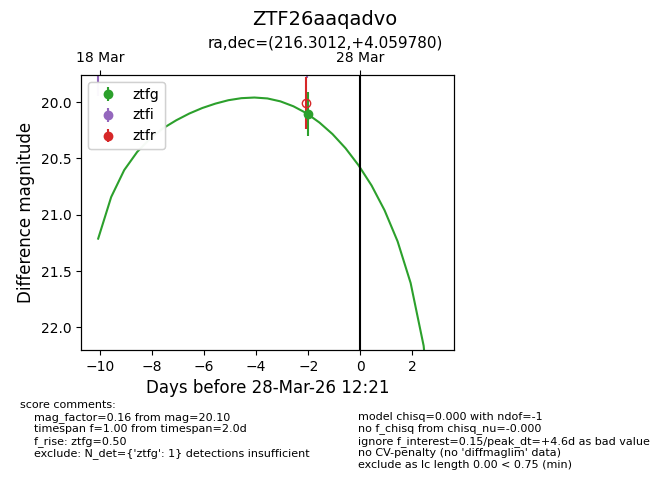
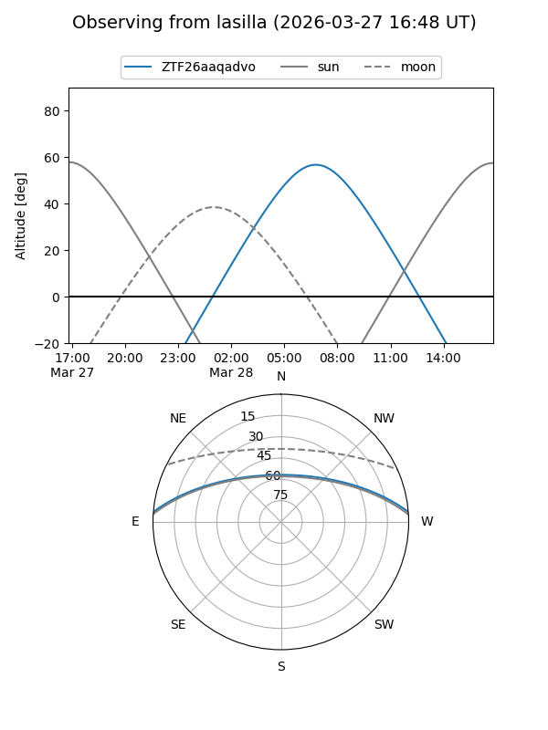
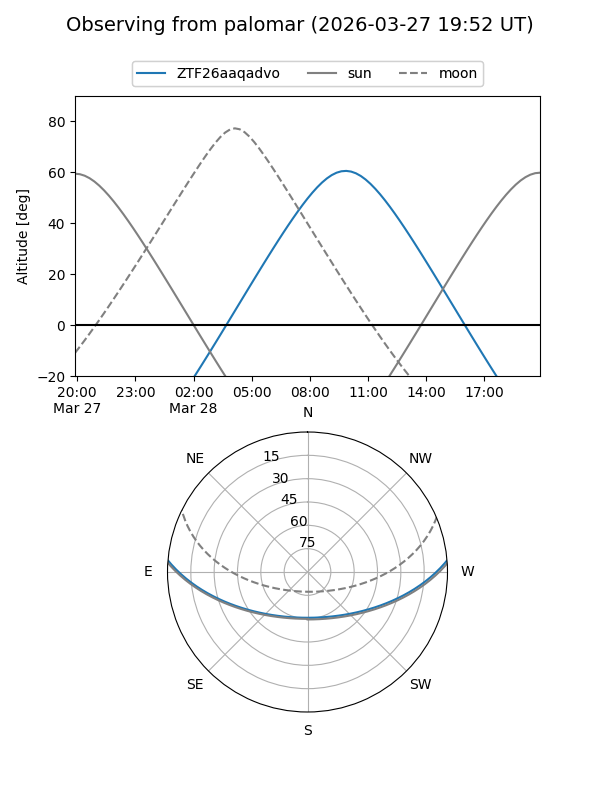
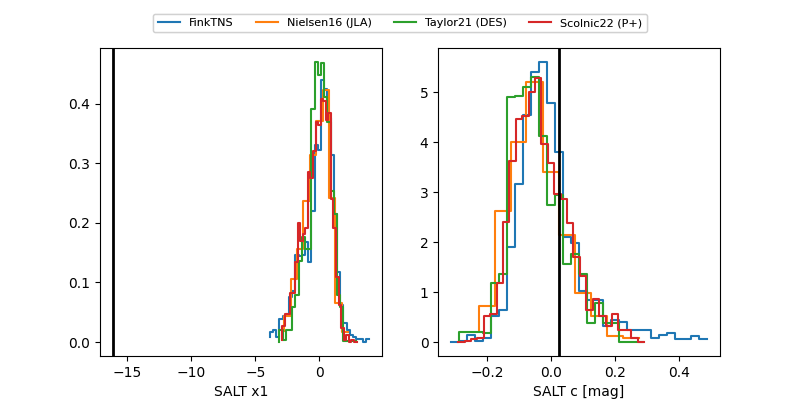

ZTF26aaqadvo
Target ZTF26aaqadvo at 2026-03-28 12:24
Aliases and brokers:
FINK: link
Lasair: link
ALeRCE: link
alt names
ZTF26aaqadvo (ztf,fink_ztf)
Coordinates:
equatorial (ra, dec) = 216.3012,+4.05978
equatorial (HMS+DMS) = 14:25:12.28,+04:03:35.21
galactic (l, b) = (351.1725,+57.86172)
Flags:
Photometry:
last ztfg=20.10
1 ztfg detections
Lightcurve

Visibility


Additional plots
